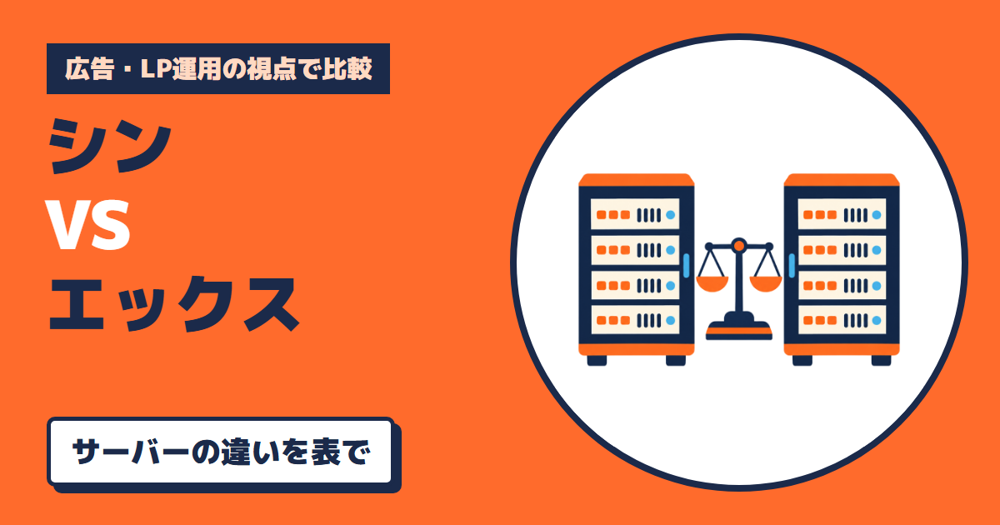

コラム ／ LP・サイト
本記事にはアフィリエイト広告(A8.net)を利用したリンクが含まれます。リンク経由でお申し込みがあった場合、運営者(SET UP)が報酬を受け取ることがあります。紹介するサービスの選定と評価は、運営者の基準で行っています。
シンレンタルサーバーとエックスサーバーの違い。広告・LP運用の視点で選ぶ

同じエックスサーバー株式会社が提供する2つのレンタルサーバーは、料金も機能も似ていて、違いが分かりにくいサービスです。公式サイトの情報をもとに、違いを表にまとめ、広告やLPを運用する立場で選び方を整理しました。
エックスサーバーとシンレンタルサーバーは、どちらもエックスサーバー株式会社が提供しています。トップページを見比べても、NVMe SSD、無料独自SSL、独自ドメインの無料特典と、書かれていることはよく似ています。「結局、何が違うのか」が分からず、選べない人も多いはずです。
この記事では、各社の公式サイトで2026年11月19日に確認した内容をもとに、違いを整理します。使ってみた感想や口コミではなく、公式に公開されている情報の比較です。
結論:どちらが向いているか
- 実績や利用者の多さ、無難さを重視するなら、エックスサーバー。公式サイトでは、サーバー運用22年以上、稼働率は創業以来99.99%以上と案内されています。
- 最安プランから、CPUやメモリの仕様が公開された環境を使いたいなら、シンレンタルサーバー。最安のベーシックでも6コア・8GB・NVMe SSD 700GBと案内されています。
- 月額は、最安プラン同士ではエックスサーバーのほうが安く(990円〜と1,078円〜、どちらも36ヶ月契約の場合)、差は月88円です。
- 広告やLPの用途では、サーバー名より、「表示速度の計測結果」「計測タグの設定のしやすさ」「無料お試しでの確認」で判断するのが現実的です。
2つのサービスの位置づけ
どちらも国内の共用レンタルサーバーで、運営会社は同じです。違いは、位置づけにあります。
- エックスサーバー:公式サイトで「国内シェアNo.1」と案内されている、定番のサービスです。WordPress運営に強いことや、サーバー運用22年以上、サイト数250万以上といった実績が示されています。
- シンレンタルサーバー:「最新技術を積極的に導入し、サーバー速度・性能で圧倒的No.1を目指す」という方針のサービスです。運用できるコンテンツのジャンルに制限がない点も、公式に案内されています。
なお、エックスサーバーのシェアは、W3Techsのデータをもとにした公式の記載です。数字の出典がある表記なので、この記事でもそのまま紹介するにとどめ、評価は加えません。
料金とプランの違い
まず、プランと料金を並べます。いずれも税込で、36ヶ月契約の場合の月額(1ヶ月あたりに換算した金額)です。
| グレード | エックスサーバー | シンレンタルサーバー |
|---|---|---|
| エントリー | スタンダード 990円〜 / NVMe SSD 500GB | ベーシック 1,078円〜 / 6コア・8GB / NVMe SSD 700GB |
| 中位 | プレミアム 1,980円〜 / NVMe SSD 600GB | スタンダード 2,002円〜 / 8コア・12GB / NVMe SSD 1,000GB |
| 上位 | ビジネス 3,960円〜 / NVMe SSD 700GB | プレミアム 4,004円〜 / 10コア・16GB / NVMe SSD 1,200GB |
| 初期費用 | 0円 | 0円 |
契約期間による料金の差も確認しておきます。シンレンタルサーバーのベーシックは、期間が長いほど月額が下がります。
| 契約期間 | 3ヶ月・6ヶ月 | 12ヶ月 | 24ヶ月 | 36ヶ月 |
|---|---|---|---|---|
| ベーシック(月額・税込) | 1,386円 | 1,232円 | 1,155円 | 1,078円 |
広告の用途で、LPを短期間だけ置く場合は、36ヶ月で契約すると使わない期間の分まで先に払うことになります。期間の選び方は、用途に合わせて決めます。
契約期間でいくらかかるか(総額の目安)
月額は「契約期間分の一括前払い」を1ヶ月あたりに換算した金額です。実際に払う総額は、月額に契約月数をかけた金額になります。公式の月額をもとに、運営者が計算した目安を並べます。
| プラン | 月額(36ヶ月契約・税込) | 36ヶ月の総額(目安) |
|---|---|---|
| エックスサーバー スタンダード | 990円 | 35,640円 |
| エックスサーバー プレミアム | 1,980円 | 71,280円 |
| エックスサーバー ビジネス | 3,960円 | 142,560円 |
| シン ベーシック | 1,078円 | 38,808円 |
| シン スタンダード | 2,002円 | 72,072円 |
| シン プレミアム | 4,004円 | 144,144円 |
この表から言えるのは、次の2点です。
- エントリーの2プランで比べると、シンのベーシックはエックスサーバーのスタンダードより、36ヶ月で3,168円高いです(38,808円と35,640円)。中位は792円、上位は1,584円で、差はグレードによって変わります(エックスサーバーのプレミアム・ビジネスと、シンのスタンダード・プレミアムを、それぞれ並べた場合)。
- 広告のLPを短期間だけ置く場合、36ヶ月契約は使わない期間の分まで先に払うことになります。たとえばシンのベーシックを12ヶ月契約にすると、月額は1,232円で、1年の総額は14,784円です。
テーマの特典も、総額の見方に影響します。有料テーマ「Xwrite」(通常9,900円/年)は、エックスサーバーのプレミアム以上、シンのスタンダード以上で0円になる、と案内されています。テーマを使う予定があるなら、その分、実質的な費用は下がります。使う予定がなければ、この特典は費用の比較に入れません。
機能・特典の違い
| エックスサーバー | シンレンタルサーバー | |
|---|---|---|
| 無料お試し | 最大10日間 | あり(日数は公式サイトで確認) |
| 無料独自SSL | あり | あり |
| 独自ドメインの永久無料特典 | 最大2つ(スタンダードは12ヶ月契約で1つ、24ヶ月以上で2つ。.jpはプレミアム以上) | 全プランで特典あり(ビジネスプランは2つ) |
| 有料テーマ「Xwrite」(通常9,900円/年) | プレミアム以上で0円 | スタンダード以上で0円 |
| 表示速度の高速化機能 | Xアクセラレータ、XPageSpeedなど | Xアクセラレータ、XPageSpeedなど |
| 移転の支援 | WordPress簡単移行、サーバー移転代行(オプション) | サーバー移転代行(オプション) |
| サポート | 電話・メール | 電話・メール |
表を見ると分かるとおり、機能面では共通点が多いのが実情です。違いが出やすいのは、料金のグレード構成と、ドメイン・テーマの特典の条件です。たとえばXwriteの0円特典は、エックスサーバーがプレミアム以上、シンレンタルサーバーはスタンダード以上が対象です。
「速度No.1」の読み方
シンレンタルサーバーの公式サイトは「国内最速No.1」をうたっています。ただし、注記にはこう書かれています。
- 2026年6月30日の自社調べである
- 自社サービスを除く、国内シェア上位3サービスと、独自に選んだ著名サービスを含む、計6つのサービス・プランが対象である
- h2loadという方法で、5回計測した結果である
- 複数のプランがあるサービスは、独自に選んだプランを除き、最下位のプランで測っている
つまり、「この条件で測ったときのNo.1」です。自分のサイトの表示速度が、そのまま同じ結果になるとは限りません。広告のレポートで、指標の定義を確認してから数字を比べるのと同じ考え方で、条件まで読んでください。
エックスサーバーの公式サイトも、速度について同じ形式の注記を出しています。「2026年7月13日、自社調べ。自社サービスを含む国内シェア上位3サービスと、独自に選んだ著名サービスの計6つのサービス・プランが対象で、h2loadを5回計測した結果。複数プランがあるサービスは原則、最下位プランで計測」という内容です。つまり、両社とも、自社が定めた条件で測った結果を公開しているのであって、第三者が同じ条件で2社を直接比べた結果ではありません。
あわせて、エックスサーバーの公式サイトには、CPUに第5世代のAMD EPYC、全ストレージにNVMe RAID10、自社専用のバックボーンネットワークを採用していると案内されています。どちらも、性能に自信のある環境です。
使い方別:どちらを選ぶか
ここまでの公式情報から、用途別に「どこを見て決めるか」を整理します。どちらが正解という話ではなく、判断の軸の例です。
| 使い方 | 見るところ | 候補になるプラン |
|---|---|---|
| 広告のLPを数ページだけ置く | 月額の安さ、無料お試し、独自ドメインの特典の条件 | エックスサーバー スタンダード(990円〜)、シン ベーシック(1,078円〜) |
| LPを期間限定で置く | 契約期間(3〜36ヶ月)と、一括前払いの総額 | 契約期間を短くできるシンの料金表(3ヶ月〜)を確認 |
| 広告の配信量を大きく増やす予定 | CPU・メモリの仕様と、リソース保証の有無 | シン ビジネス(リソース保証、1,630円〜)、上位プラン |
| テーマ(Xwriteなど)も使う | テーマの無料特典の対象プラン | エックスサーバー プレミアム以上、シン スタンダード以上 |
| .jpなどのドメインも取りたい | ドメイン特典で選べるドメインの種類 | エックスサーバー プレミアム以上(.jpを含む) |
広告・LP運用の視点で見るポイント
広告を出す立場で見るなら、サーバーの比較は次の3点に絞れます。
- 広告のクリック先として、表示が速いか。これはカタログの数値ではなく、自分のサイトを置いたときの計測で確認します。無料お試しの期間に、PageSpeed InsightsでLCPとTTFBを測ります(指標の見方は、WordPressが遅いときの確認事項に書きました)。
- 計測タグ(Googleタグマネージャー、GA4)が問題なく動くか。どちらも一般的な共用レンタルサーバーなので、タグの設置自体はサーバーに依存しません。移転した場合は、移転後にテストのコンバージョンで確認します。
- 広告を増やしたときに、余裕があるか。アクセスが急に増える可能性があるなら、プランを上げられるかを確認します。両社とも、プラン変更ができると案内されています。シンレンタルサーバーには、CPUとメモリを保証する「リソース保証」のビジネスプラン(月額1,630円〜)もあります。
LPの置き場所そのものから考えたい場合は、「LPはどのサーバーに置くべきか」も参考にしてください。サーバーを借りずに、ホームページ作成サービスでLPを作る場合の条件は、「ペライチの料金プランを比較」で整理しています。
乗り換え・移転するときの費用と手間
すでに別のサーバーでサイトを運営している場合は、乗り換えの手間と費用も判断材料になります。両社の公式ページで確認できる内容は次のとおりです。
- 自分で移行する:エックスサーバーには、他社のWordPressを自動で移す「WordPress簡単移行」があります。WordPress 4.2〜7.1、PHP 7.2以上が条件で、マルチサイトやデータベースが2GBを超える場合などはエラーになります。移転元の「.htaccess」は移行されません。
- 代行を頼む:両社とも「サーバー移転代行」をオプションで用意しています。価格は、どちらも1サイト33,000円(税込)、所要日数は5営業日(シンは5営業日程度)です。エックスサーバーはビジネスプランに限り、初回無料です。
- 代行の対象外:エックスサーバーの案内では、「Webサイトの動作確認」と「ネームサーバー(DNS)の変更」は代行できない作業とされています。
移行の手順と、広告・計測を壊さないための確認事項は、WordPressが遅いときの確認事項の記事にまとめています。
申し込み前のチェックリスト
- 用途に対して、契約期間(3〜36ヶ月)が長すぎないか
- ドメインの無料特典の条件(契約期間、対象ドメイン)を、申し込み画面で確認したか
- 無料お試しの期間と、お試し中にできないことを確認したか
- 公式ニュースに、障害・メンテナンス、仕様変更のお知らせが出ていないか(2026年11月19日時点では、両社ともnginxの脆弱性対策に伴うHTTP/2の一時無効化のお知らせが出ていました)
- 移転する場合、DNSの切り替えと計測タグの確認の手順を決めたか
公式サイトで、プランと特典を確認する
エックスサーバー
公式サイトでは、W3Techsの調査(2026年6月時点)をもとに国内シェアNo.1と案内されています。稼働率99.99%以上の実績や、サーバーデータの自動バックアップも公開されています。
- 向いている人:会社のLPを初めて自前で置く人、利用者の多さと安定性を重視する人
- 10日間の無料お試しがあり、契約前に管理画面の使い勝手を確認できます
シンレンタルサーバー
エックスサーバー社が、新しい技術を積極的に取り入れる方針で提供しているサービスです。最安のベーシックプランで仮想CPU 6コア・メモリ8GB・容量700GBと公式に案内されています。運用できるコンテンツのジャンルに制限がない点も公式に案内されています。
- 向いている人:最安プランの仕様を重視する人、新しい機能を早く使いたい人
- 最安プランの月額は、エックスサーバーより少し高めです
よくある質問
- Q. 同じ会社のサービスなのに、なぜ2つあるのですか?
- 公式サイトの案内からは、エックスサーバーを定番のサービス、シンレンタルサーバーを新しい技術を積極的に取り入れるサービスと位置づけていることが読み取れます。運営会社が2つに分けている理由そのものは、公式には明記されていません。
- Q. シンレンタルサーバーのほうが速いのですか?
- シンレンタルサーバーは、特定の条件で自社調べの結果を公開しています。ただし、自分のサイトでの速さは、サイトの作りによって変わります。無料お試しで、実際のサイトを計測して比べるのが確実です。
- Q. あとからプランや、サーバーを変えられますか?
- プラン変更は両社とも案内されています。サーバーを別のサービスに乗り換える場合は、データの移行が必要です。移転を支援するサービスが用意されています。
- Q. 法人でも使えますか?
- エックスサーバーには、法人向けの「XServerビジネス」という別のサービスもあります。この記事で比べたのは、個人・小規模向けの共用レンタルサーバーです。法人の要件(SLAなど)が必要な場合は、公式サイトで確認してください。
まとめ
- 2つのサービスは、機能面の共通点が多く、差は料金のグレード構成と特典の条件に出やすい
- 最安プランは、エックスサーバー(990円〜)がシンレンタルサーバー(1,078円〜)より安い
- シンレンタルサーバーの「速度No.1」は、条件つきの自社調べ。自分のサイトでの速度は、無料お試しで計測して確かめる
- 広告・LPの用途なら、表示速度の計測、計測タグの確認、プランを上げられるかで選ぶ